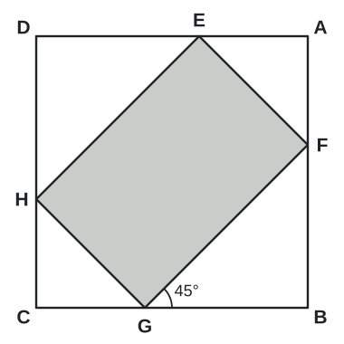

במערכת הצירים שלפניכם נתון ריבוע ABCD. נתון: b = a2.
על פי נתונים אלו ונתוני הסרטוט, מהו שטחו של הריבוע?
הצגת הפתרון
התשובה הסופית1תשובה (1)5b²
דרך הפתרון והסבר
הצלע AB של הריבוע היא היתר של המשולש ישר הזווית שנוצר עם הצירים:ניצב אחד – מהראשית עד A: a.ניצב שני – מהראשית עד B: b.שטח הריבוע הוא ריבוע הצלע, ולפי פיתגורס:AB² = a² + b²נתון b = a2, כלומר a = 2b:AB² =(2b)² + b² =4b² + b² =5b²
💡 הלקח
ריבוע שצלעו יתר של משולש עם הצירים: שטח = a² + b² (פיתגורס בלי שורש).
איזו מהטענות הבאות נכונה בהכרח לכל x ו־y השונים מ־2?
הצגת הפתרון
התשובה הסופית4תשובה (4)−3 ≤ $(x) · $(y)
דרך הפתרון והסבר
נבדוק אילו ערכים $(a) = aa − 2 מקבל (a טבעי, a ≠ 2):a = 1: 1−1 = −1a = 3: 31 = 3 – הערך הגדול ביותר.a ≥ 3: aa − 2 = 1 + 2a − 2, בין 1 ל־3 (יורד לכיוון 1).המכפלה $(x) · $(y) הקטנה ביותר: −1 · 3 = −3.לכן תמיד −3 ≤ $(x) · $(y) ✓שאר הטענות – דוגמאות נגדיות:(3) x = 1, y = 3: המכפלה −3, לא גדולה מ־1 ✗(1) x = 3, y = 4: 32 = 1.5 > 1 ✗
💡 הלקח
בודקים את הערכים הקטנים (a = 1, 3, 4…) – שם מתגלים המקרים החריגים.
🔁 דפוס חוזר: פעולה מוגדרת מציבים בדיוק לפי ההגדרה, מבפנים החוצה, ושמים לב לסדר.
מוקשים נפוצים
המקרה a = 1 נותן ערך שלילי – בלי לבדוק אותו מפספסים את התשובה.
נבדקהפתרון תואם את מפתח התשובות של הספר.
שאלה 3
איזה מהביטויים הבאים אינו בהכרח חיובי, בעבור כל שני מספרים שלמים השונים מ־0?
הצגת הפתרון
התשובה הסופית4תשובה (4)כל התשובות נכונות
דרך הפתרון והסבר
נבדוק כל ביטוי – האם הוא יכול להיות 0 או שלילי:(1) |x + y| = 0 כש־x = −y (למשל 1 ו־−1) ✗(2) (x − y)² = 0 כש־x = y ✗(3) (x − y)(x + y) = x² − y² שלילי כש־|x| < |y| (למשל x = 1, y = 2: −3) ✗אף אחד מהשלושה אינו חיובי בהכרח, ולכן התשובה (4) – "כל התשובות נכונות".
💡 הלקח
"חיובי בהכרח" – ביטוי שיכול להיות 0 נפסל.
🔁 דפוס חוזר: זהויות של ריבוע(a ± b)² = a² ± 2ab + b²; (a + b)² − (a − b)² = 4ab.
🔁 דפוס חוזר: ערך מוחלט|x| = מרחק מ־0. ל־x שלילי |x| = −x. שני ערכים מוחלטים שווים – שווים או נגדיים.
מוקשים נפוצים
"חיובי" פירושו גדול מ־0 – ביטוי שיכול להיות 0 אינו חיובי בהכרח.
y בין 4 ל־6 – חיובי, ולכן אפשר לחלק בו בלי להפוך את הכיוון:x > 12yy < 6, ולכן 12y > 126 = 2:x > 2 ✓חסם עליון אין: x יכול להיות 100 (100 · 5 = 500 > 12). לכן x < 3 לא בהכרח.
💡 הלקח
חלוקה בחיובי שומרת על הכיוון: x > 12/y > 2.
🔁 דפוס חוזר: שלילי הופך אי־שוויון כופלים או מחלקים בשלילי – הופכים את כיוון אי־השוויון.
מוקשים נפוצים
y חיובי – לכן אין היפוך סימן.
נבדקהפתרון תואם את מפתח התשובות של הספר.
שאלה 7
כמה מספרים המתחלקים ללא שארית ב־2, ב־3, ב־5 וב־6 ישנם בין 0 ל־1000?
הצגת הפתרון
התשובה הסופית3תשובה (3)33
דרך הפתרון והסבר
מספר שמתחלק ב־2, ב־3 וב־5 מתחלק במכפלה שלהם – 30 (הם ראשוניים שונים).התחלקות ב־6 כבר כלולה (6 = 2 · 3).כמה כפולות של 30 יש בין 0 ל־1000?100030 ≈ 33.3, ולכן 33 כפולות: 30, 60, …, 990.
💡 הלקח
מתחלק בכמה מספרים ⇔ מתחלק בכפולה המשותפת הקטנה (30); סופרים כפולות.
🔁 דפוס חוזר: כפולה משותפת קטנה מתחלק בשני מספרים ⇔ מתחלק ב־LCM שלהם; אירועים חוזרים נפגשים ב־LCM.
🔁 דפוס חוזר: מעריך שלילי ובסיס בין 0 ל־1 בין 0 ל־1: חזקה חיובית מקטינה, שלילית מגדילה. a⁻ⁿ = 1/aⁿ.
מוקשים נפוצים
הכפולה המשותפת הקטנה היא 30, לא 2 · 3 · 5 · 6 = 180.
נבדקהפתרון תואם את מפתח התשובות של הספר.
שאלה 8

בסרטוט שלפניכם ריבוע ABCD בו חסום מלבן EFGH. שטחו של המשולש GBF גדול פי 94 משטחו של משולש CHG.
על פי נתונים אלו ונתוני הסרטוט, מה היחס בין שטחו של המלבן האפור וריבוע ABCD?
הצגת הפתרון
התשובה הסופית4תשובה (4)12:25
דרך הפתרון והסבר
∢FGB = 45°, והזווית ב־B ישרה. לכן המשולש GBF ישר זווית ושווה־שוקיים:BF = BG.∢HGF = 90° (זווית המלבן), ולכן ∢CGH = 180° − 90° − 45° = 45°. גם המשולש CHG שווה־שוקיים:CH = CG.שני המשולשים דומים (שניהם 45°-45°-90°). יחס השטחים 94, ולכן יחס הצלעות 32:נסמן CG = 2, BG = 3. אז CH = 2 ו־BF = 3.צלע הריבוע: BC = CG + GB = 5.צלעות המלבן:GF = 3√2 (יתר במשולש GBF), GH = 2√2 (יתר במשולש CHG).שטח המלבן: 3√2 · 2√2 = 12שטח הריבוע: 5² = 25. היחס:12 : 25
💡 הלקח
יחס שטחים 9/4 ⇐ יחס צלעות 3/2. זווית 45° יוצרת משולשים שווי שוקיים.
🔁 דפוס חוזר: יחס שטחים = ריבוע יחס הצלעות בצורות דומות: אורך פי k ⇐ שטח פי k², נפח פי k³.
מוקשים נפוצים
יחס השטחים 94 הוא ריבוע יחס הצלעות – הצלעות ביחס 3:2, לא 9:4.
נבדקהפתרון תואם את מפתח התשובות של הספר.
שאלה 9
סייד מסייד 10 מ"ר ב־5 דקות. כמה זמן (בדקות) יידרש לסייד תיבה שמקצועותיה הם 3 ס"מ, 4 ס"מ ו־5 ס"מ?
הצגת הפתרון
התשובה הסופית3תשובה (3)47
דרך הפתרון והסבר
שטח הפנים של תיבה עם מקצועות 3, 4 ו־5 (מטרים):2(3 · 4 + 3 · 5 + 4 · 5) =2(12 + 15 + 20) =94 מ"רקצב העבודה: 10 מ"ר ב־5 דקות = 2 מ"ר בדקה.הזמן:942 = 47 דקות
💡 הלקח
שטח פנים של תיבה: 2(ab + ac + bc). זמן = שטח ÷ קצב.
🔁 דפוס חוזר: ספירה וסידורים מכפילים אפשרויות; גוש של צמודים = יחידה אחת; זוגות = n(n−1)/2.
🔁 דפוס חוזר: הספק וקצב עבודה עבודה = מספר עובדים × זמן; קצב נטו = הוספה − הוצאה.
מוקשים נפוצים
לשטח הפנים של תיבה יש 6 פאות – שלושה זוגות, ולכן מכפילים ב־2.
נבדקהפתרון תואם את מפתח התשובות של הספר.
בשאלה כתוב "ס"מ", אבל עם ס"מ התשובה לא מתאימה לאף אפשרות. ביחידות של מטר מתקבלת בדיוק תשובת המפתח.
שאלה 10
בסל יש x + 2 כדורים אדומים ו־x + 2 כדורים כחולים. x הינו מספר שלם וחיובי. מה ההסתברות להוציא 3 כדורים אדומים בזה אחר זה (ללא החזרה)?
הצגת הפתרון
התשובה הסופית2תשובה (2)x4(2x+3)
דרך הפתרון והסבר
בסל x + 2 אדומים ו־x + 2 כחולים – סך הכול 2x + 4. מוציאים 3 כדורים בלי להחזיר.הראשון אדום: x + 22x + 4 = 12השני אדום (נשארו x + 1 אדומים מתוך 2x + 3): x + 12x + 3השלישי אדום (נשארו x אדומים מתוך 2x + 2): x2x + 2 = x2(x + 1)נכפיל:12 · x + 12x + 3 · x2(x + 1) =x4(2x + 3)((x + 1) מצטמצם.)
💡 הלקח
בלי החזרה – בכל הוצאה יורדים גם המונה וגם המכנה.
🔁 דפוס חוזר: יחס שטחים = ריבוע יחס הצלעות בצורות דומות: אורך פי k ⇐ שטח פי k², נפח פי k³.
מוקשים נפוצים
בלי החזרה – גם מספר האדומים וגם סך הכדורים יורדים ב־1 בכל הוצאה.